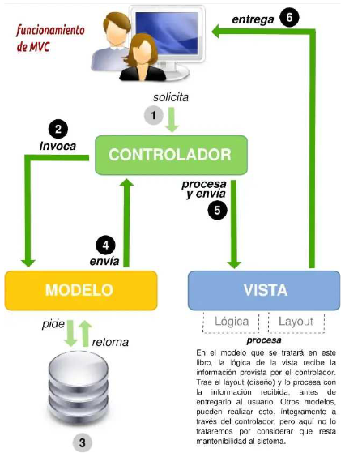

MVC, son las siglas de modelo-vista-controlador (o en inglés, model-view-controller), que es uno de los tantos patrones de arquitectura de software. El patrón MVC es un patrón de arquitectura de software encargado de separar la lógica de negocio de la interfaz del usuario y es el más utilizado en aplicaciones Web, ya que facilita la funcionalidad, mantenibilidad y escalabilidad del sistema, de forma simple y sencilla, a la vez que permite “no mezclar lenguajes de programación en el mismo código”.
MVC divide las aplicaciones en tres niveles de abstracción:
- Modelo: representa la lógica de negocios. Es el encargado de acceder de forma directa a los datos actuando como “intermediario” con la base de datos. Lo que en
nuestro ejemplo de programación orientada a objetos, serían las clases DBAbstractModel y Usuario. - Vista: es la encargada de mostrar la información al usuario de forma gráfica y “humanamente legible”.
- Controlador: es el intermediario entre la vista y el modelo. Es quien controla las interacciones del usuario solicitando los datos al modelo y entregándolos a la vista
para que ésta, lo presente al usuario, de forma “humanamente legible”.
¿Cómo funciona el patrón MVC?
El funcionamiento básico del patrón MVC, puede resumirse en:
- El usuario realiza una petición
- El controlador captura el evento (puede hacerlo mediante un manejador de eventos – handler -, por ejemplo)
- Hace la llamada al modelo /modelos correspondientes (por ejemplo, mediante una llamada de retorno – callback -) efectuando las modificaciones pertinentes
sobre el modelo - El modelo será el encargado de interactuar con la base de datos, ya sea de forma directa, con una capa de abstracción para ello, un web-service, etc, y retornará esta información al controlador.
- El controlador recibe la información y la envía a la vista
- La vista, procesa esta información pudiendo hacerlo creando una capa de abstracción para la lógica (quien se encargará de procesar los datos) y otra para el diseño de la interfaz gráfica o GUI. La lógica de la vista, una vez procesados los datos, los “acomodará” en base al diseño de la GUI - layout – y los entregará al usuario de forma “humanamente legible”.
